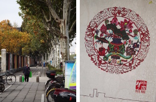
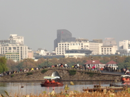
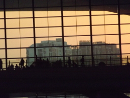

Shanghai, Hangzhou, November 2017
This is the diary of the trip to Shanghai and Hangzhou that Rosemary and I
made in November 2017. It was a research visit to Yaokun Wu at Shanghai Jiao
Tong University, with an International Workshop on Bannai–Ito Theory
in Hangzhou in the middle. We each gave a short lecture course in Shanghai.
Prelininaries
The diary begins a few days before we set off. We had a few things to do in
London, so we went south from St Andrews on Tuesday 7 November.
Tuesday 7 November 2017
An unhurried start to the day, plenty of time to have breakfast and finish
packing. Last night our bin appeared to have been spirited away, but it
turned out when I went looking that the bin men had simply left it in the
middle of the road, and I hadn't seen it behind a parked car.
We caught the 99B, which took us all round the houses and eventually past the
harbour and through town back to the bus station, and then after a pause on to
Leuchars, where we had nearly half an hour to wait. The train was actually a
few minutes early, and not crowded, and our seats were empty. Contrary to my
usual custom, I didn't do any work on the train, but read carefully the LMS
newsletter (all 64 pages of it). After Edinburgh we had lunch. Before then
we were unable to get coffee from the trolley because it had run out of hot
water; from Edinburgh to Newcastle they didn't have enough staff for the trolley
to make its rounds. So I went and queued up for a long time for a coffee, and
bought two small bottles of Australian red wine also. We drank the wine after
York, and did the crossword in the i.
At Kings Cross we had a long wait for a very crowded train to Stepney Green,
but were home at a reasonable hour. I went out to the shop, then we had pasta
for dinner, and I looked at my mail. There had been an email from Hester which
I read in St Andrews before we left, and I had suggested going there on
Thursday for dinner. We agreed this, though there is a train strike, so
anything might happen.
Wednesday 8 November 2017
After breakfast I went out to meet Siavash (a prospective PhD student)
at the Half Moon. We had a very
good conversation, and I set him two problems: show that the quadratic
residue construction for the random graph works, and show that the number
of permutations of length n omitting a pattern of length 3 is independent of
which pattern is chosen.
After lunch I read email and worked a bit. Not a great deal achieved but I
did get my email tidied up a bit.
The web page still expects trains to be running "a reduced service" which as
far as I can see is exactly the same as normal service (except for the
Camberley line which is a replacement bus).
Thursday 9 November 2017
I thought the surgery opened at 9, but it turned out to be 8.30. So I got
there a bit after it had opened, but managed to get a flu jab appointment
for tomorrow lunchtime.
Then I went into QM to try to get the piece of paper from Yaokun (asking
for directions in English and Chinese) printed out. My card has been
registered for the Follow-Me Print system, so I didn't anticipate having any
trouble.
Ha. I got in and sat down on a comfy chair outside the School office, and
logged in to Eduroam, no problem, and logged in to my QM account, no problem.
Then lpr wouldn't work since it didn't know the default printer. Meanwhile
Caroline had arrived, and she very kindly offered to print it for me; so I
emailed it to her, and she did the business.
I thanked her and left. I went into the mailroom to collect mail, and found
Paul there. There was too much mail for the bag I had brought, so he told me
where to find a drawer of supermarket carrier bags in the kitchen.
On my way out, I decided I would drop in to IT support and ask
them how to use the system from a unix command line. Of course the person on
the reception desk had no idea, and told me to wait. Eventually one of the
staff came over to see me. She had no idea either. I let her talk me into
trying to use the web-based print system. The first attempt failed because
she had wrongly connected me to the student print system. After a colleague
pointed this out, she tried again on the staff system. It still didn't work.
Everything worked up to the point where the document had to be actually sent
to the printer, but this didn't happen. So again she offered to print it out
for me, so I emailed it to her and she did so. Not very good!
Then I came home. We had lunch, and soon afterwards set out for a journey
which would potentially be a bit fraught.
The tube got us to Waterloo in half an hour. The station was very quiet, with
almost no queue at the ticket office, so we had our tickets long before our
train was announced. When it was, we got on, and it left right on time, and
proceeded on its way on time to Ascot.
We got off, finding no signs about a replacement bus service or indications of
where to catch it. But eventually we found a group of people outside. Not sure
what they were doing, but eventually a woman with a clipboard came over and
told us where the bus was. So we went and boarded it.
On the revised timetable, the journey to Camberley had been given 20 minutes.
In fact it took half an hour; the combination of the school run and people
leaving work early meant very heavy traffic. At Camberley, there was a small
notice on the door about where to catch the replacement buses but no indication
of where or when, or even where they would stop.
So we walked out to Hester's house, arriving a bit early, and having a fifteen
minute wait outside. The day was mild, and the light slowly fading, while a
blackbird repeatedly gave its alarm call from next door.
Hester arrived with Lyra and Charlie. (Bob would come a bit later, since he
was driving back from a meeting in Coventry.) We started on nibbles and wine,
and had pizza and salad when it was ready. Bob arrived in the middle of this.
Then Charlie demanded bedtime stories from both me and his mother before he
would go to bed. When this was done, Hester offered to take us to Ascot;
given the uncertainty of the buses, we accepted. We were in time to catch the
20.10 from Ascot, and were home by 21.30.
Friday 10 November 2017
After breakfast I had a fairly leisurely bath, and read my email before going
out to the surgery for my jab.
I asked the nurse about getting shingles as well as flu. She looked up new
guidance from the NHS, which said it is OK as long as the symptoms of a
shingles attack have gone. So I had both, one in each arm.
She also noted that I had not had a checkup for a while. So she took my blood
pressure and pulse twice (getting 132/90, 53 first time and 140/90, 49 the
second). She said that the blood pressure is a bit high but since I seem fine
in other respects there is nothing to worry about. She also felt my pulse
herself to check for irregularities, and found none.
On the way home, the Co-op was out of bread – some fault with the
equipment – so I had to get a sliced loaf. I came home and we had lunch,
finishing the pâté, cheese and celery.
At about 2 we set off for Euston Square. The tube came promptly and we were
at the station by 2.30. There was some building work going on around Tavistock
Square, but we arrived at BMA house, checked in, and got visitor cards to
open the gates.
The meeting went without hitch; my moment came after tea when I had to go up
and shake Simon's hand and collect my certificate for the Senior Whitehead
Prize. There was a photographer, so I suppose I will get a picture at some
point.
The first talk was by a friend of Simon's, who works in machine intelligence
(and is also chief scientist for Uber). An interesting talk, though rather
short on detail. Simon's own talk was something else again, a discussion of
the Ewens sampling formula, which gives (among other things) the distribution
of cycle lengths in a random permutation, cycles if you take some strands of
cooked spaghetti and pair them up and tie together at random, etc. At the
end, he described a more difficult problem, not solved. Basically it concerns
random derangements, but not in the uniform distribution, rather in the
distribution given by restricting Feller's method of simulating a random
permutation. It reminded me of Julian Gilbey's Screaming Toes problem, which
I told him about later.
After the talk, we went to De Morgan House for drinks, where (among many others)
I chatted to Rob Curtis about the Higman–Sims group, and promised to send
him a link to the paper by Klin and Woldar. Then it was round the
corner to the Montague for dinner. I was on "top table" with Simon, his
second speaker, and some of the other prizewinners. A good meal: cauliflower
soup with truffle oil, Gresham duck, and apple and pear crumble. Good
conversation with various people. We left a bit before 10, and made our way
to Holborn station, and so home via Liverpool Street. After sitting for a
while, we went to bed.
The journey out
Saturday 11 November 2017
It rained in the night, quite hard I think; the roof leaked, and we were
disturbed by the dripping of water into the basin, to say nothing of worried
about when we are ever going to be around for long enough to get someone to
come and fix it.
We got up and breakfasted. I read email a last time, and sent the link to
Klin and Woldar to Rob Curtis and a page from my book to Simon Tavaré.
We'd forgotten that we were out of stuff for lunch. There was also a
courgette to eat up. So I went to the Co-op and bought a higgidy pie,
which we had for lunch.
Around all this, I managed to pack, throw out rubbish, and so on and so forth.
We left the house just before 4, and had a reasonably quick trip to Heathrow,
though we did have to wait at Hatton Cross for a train to Terminal 4. We found
our way to the China Eastern checkin. Already, three and a half hours before
flight time, there was a long queue, most people with very heavy cases, so
that it took over half an hour to check in. We went through security (not at
all crowded, so quite quick), then got meal deal sandwiches etc. from Smiths,
including water to take on the plane.
Boarding was fairly quick, except that they called our row numbers right at
the start and then didn't let us board until all the first and business class
passengers had got on, so that we had to push past them to get to our seats.
The plane, a 777, was pretty much full; we were in the very back row (but
fortunately, unlike on my miserable trip to Melbourne on an A380, the seats
did recline).
We left a little late. Meals came around fairly quickly, though they had to
apologise that there was no choice.
Sunday 12 November 2017
After dinner, they put out the lights. THey didn't have much of interest on
the in-flight entertainment system, but there was some Leonard Cohen and some
Bob Dylan music, including Cohen's own version of "Hallelujah" which I had
not heard before. I dozed off while listening. After a while, I decided it
was morning (Shanghai is eight hours ahead of London), so I scanned through
the films, and found "The Magnificent Seven" (the remake starring Denzel
Washington), so I watched that – very good, I thought.
Breakfast(?) was another dinner. After that it was not too long until arrival.
We passed south of the airport, across a flattened landscape with some canals
(we learned later that a "new town" is going to be built there), and out to
sea before turning round and approaching from the east. The flight info showed
no sea there; but then, it was not entirely accurate on other things either.)
We descended over a landscape of rice fields with European-style houses before
touching down.
Immigration is divided into crew, Chinese, foreigners, and transit passengers.
There were quite a large number of foreigners (mostly ethnic Chinese), but
the queue moved much faster than at Heathrow. We didn't know what category of
visitor to put on the form, so left it blank. When we applied for the visas,
we had done similarly; the girl said "Academic visitor" and ticked the
appropriate box, but I didn't see which box she ticked, and none of the given
categories matched. But at the immigration desk, the girl either didn't notice
or said nothing. (I waved the invitation letter at her just in case; she took
a quick look and returned it.) Then at customs, they decided not to X-ray our
bags, so we were out fairly promptly, and Yaokun Wu was waiting for us just
outside the gate.
He took us out to the taxi rank and we hailed a taxi. We drove along big roads
in a general north-westerly direction over dead flat land; apart from rice
fields and European-style houses at first (similar to what we saw from the
plane) we could see very little. At a certain point, we passed the new
Disneyland, marked on official road signs by a logo consisting of three
circles representing Mickey Mouse (though perhaps looking more like a panda).
This was the cue for Yaokun to tell us about Shanghai's two zoos and two
botanic gardens.
Eventually we crossed a bridge and were in the centre. After some wiggling we
arrived at the hotel, the Jianguo, in the Xujiahui district (one of the main
shopping districts of Shanghai). Opposite was a strange sight; among the
tall concrete blocks across the road, one was topped by the illumated shape
of a Chinese-style temple. Yaokun said it was the Tibetan centre. We went up
and found our room, and I checked that the wi-fi was working: I could access
my email and various websites (though Google seems to be blocked and I had
no luck with either WordPress or Dropbox).
|
He waited downstairs while we got a bit freshened up and went down to meet him
again. He took us to a restaurant in what we thought was a former railway
station (we found out later that, despite the name, it was a former nunnery).
You walk into a long hall full of interesting old artefacts including sewing
machines, still and movie cameras, projectors, and gramophones. Leading off
it was a huge room full of tables. The ordering system was a tablet on which
you could scroll through
small pictures of the dishes, and enlarge any one to see a big picture and the
English name, and then decide to order it or not. We ordered several dishes,
all fish as it turned out (I don't think that was planned). The first consisted
of brown things looking a bit like spare ribs, extremely tasty, though with
small bones. The second was a white fish with exotic mushrooms swimming in a
gooey sauce. The third had little brown objects on a bed of pea sprouts. We
also had a dish of vegetables, and a bottle each of fermented "enzyme juice"
of different flavours: fruity, but with a sharp edge that was quite pleasant.
|
|
After dinner, Yaokun suggested going on to further sightseeing, but we decided
we were tired and went back to the hotel. We did some minimal unpacking, and
then went to bed. I lay down and was asleep before I even got into a comfortable
position.
Shanghai, part 1
Monday 13 November 2017
After waking several times in the night, we went to sleep again, and didn't
surface until 9.15. We got up and went down to breakfast, though neither of us
was fully awake. There were Chinese and Western style things to eat including
the standard cereal, bacon, and fruit.
There were copies of the China Daily available. I picked one up and was very
scared. The top two items were a picture of a visit by Xi and top party
officials to a historic site, showing them all giving Nazi-style salutes,
and an item about a new law imposing sentences of up to three years in prison
for disrespect of the national anthem.I thought I was going to find the next
few weeks quite difficult. Things would be so much better if it were not for
posturing politicians! However, in the event it was not so bad. The China Daily
was some weeks out of date, and no new edition appeared during our stay; with
the firewall and the calls on our time, we were fairly well insulated from news.
After breakfast Rosemary, who was really suffering, went back to bed, and I
wrote up my diary. I did manage to connect to WordPress, though no luck with
Dropbox. But the wi-fi is very slow and inefficient. Then I brought my diary
up-to-date. While doing this, the wi-fi cut out and refused to reconnect.
|
In the afternoon, we set out for a little walk. Just down the street on the
other side is the site of the observatory of Xu Guangqi (1562-1633), a
mathematician (translator of Euclid into Chinese), astronomer, calendar
reformer, agronomist (after conducting experiments, he introduced the growing
of sweet potatoes to the Shanghai area), military strategist, and Christian
convert, on whose land the Catholic cathedral and monasteries in this area
were built. Down the side street is a small park containing his tomb, another
statue of him, and a memorial hall (which supposedly contains the Euclid
translation but is closed on Mondays and Tuesdays), as well as lots of trees
and ponds. In the trees, many birds sang, making a change from the street
noise; the ponds contained goldfish and turtles but also bred mosquitoes.
Quite a few people were in the park, mostly playing cards, but also doing
tai chi and just wandering around photographing things.
|
|
We learned later that the name of the neighbourhood, Xujiahui, means something
like "the place of Xu's family".
|
Out of the park, we turned up the street and came to the old campus of Shanghai
Jiao Tong University (formerly Shanghai Nanyang University), where we were
unable to follow the guidebook's instructions and lie on the grass since all
the grassed areas were fenced in and closed. There was a maritime museum which
was also closed, but while we were admiring a huge anchor a woman came and
explained to us that the University had a very famous maritime department
which has moved to the new campus, and this anchor is a memorial to it.
There was a small shop on the campus where we bought cake and coffee, and sat
outside to consume it.
|
|
Then we headed back to the hotel by a different way, which brought us to the
area of shopping malls. We poked our head inside one to see what it had,
whereupon a guard showed us the directory board, hidden behind some greenery.
We decided we didn't need to go shopping just then!
We walked down the street past many more shops, and crossed over by the
subway, coming up near Ye Olde Station Restaurant where we ate last night.
The information boards explained that, despite the name, it was actually an
old nunnery. We went in and looked at the things on display.
Then we headed back to the hotel. I transferred my pictures and tidied them up
a bit, and then brought my diary up to date, while Rosemary worked on her
slides.
I discovered another curious thing about the Chinese internet. It is possible
to access XKCD, but it is about a week behind. Is it that the censors look at
the site and give themselves a week to decide whether the content is
acceptable?
It came on to rain quite hard. When the rain eased off a bit, we ventured out
to eat. We found a "food court" in the basement of a shopping mall that seemed
to specialise in computers, and ate in a place that did Japanese-style soups.
Then home and off to bed.
Tuesday 14 November 2017
I woke in the middle of the night, with a pain in my gut and a pain in my foot,
and couldn't get back to sleep; I dozed fitfully until 7.30.
We got up and had breakfast. The room was absolutely packed, and we had to
share a table. Many people there were delegates at the Asia Pacific Chemical
Reaction Engineering Symposium.
Back in the room after breakfast, and the wi-fi signal was so weak that I
couldn't connect to email in either St Andrews or Queen Mary.
A little before 10.30, the student, Xiong Yanzhen, arrived to collect us.
We went to the entrance to the Xujiahui metro that we had found yesterday.
Then the journey involved line 1 to the terminus, and then line 5 (which is
essentially a continuation) to Dongchaun Road. The new campus of the
Unversity is out here in what was until recently an entirely separate town
with farmland between it and Shanghai – now some farmland remains but it
is basically all built up.
We went to a Szechuan restaurant where Yaokun joined us shortly. As my digestive
system was not in very good order, I forebore to order any of the interesting
things on the menu (boiled bullfrog in chili oil, rabbit's head, etc). We went
for the more boring pork, smoked duck, and shrimps, with vegetables and fried
rice. Plenty of food, so that we couldn't quite finish. Then Yaokun took us
to the campus, which involved a fair walk down a big road.
The campus itself, what we saw of it, is pleasant, with a small grove of what
I took to be pine trees (though I discovered later that they are not, and I
never found out what they are: very small leaves not much bigger than pine
needles, but orange-brown at this time of year), and cut by several canals. The
mathematics department is across a small bridge from the main part of the
campus, but the bridge was being repaired, so the walk involved a further
detour to the next bridge.
Once there, we were provided with an office and a key. Yaokun sent an email
telling us the location of Eiichi and Etsuko Bannai's office, and them our
office; I replied inviting them to come to see us when convenient, and shortly
they arrived, and we had a talk before it was time for the seminar. They have
been here for six or seven years, and their contract expires soon; they will
go back to Japan, where they will not have a university position, but will be
forced to retire. At the moment they have two houses, one in Tokyo and one in
Kyushu, and one son living in each house; so they will have to kick one out.
|
Then to the seminar. Rosemary went first, and got quite a lot of interaction
from the students; one of them realised that according to her definition a
partition is orthogonal to itself, before she revealed this shocking truth.
After a short break I talked, giving the introductory session on permutation
groups and transformation semigroups.
The Bannais invited us and the students to dinner. We went to a restaurant
close to both the university and their apartment, where you chose dishes from
an illuminated display on three walls of one room, and then we had a private
dining room upstairs with a lazy Susan on which the dishes were placed, so
that we could all tuck in. It was a delicious meal, accompanied by Chinese
"golden wine", and the group of ten was just the right size that conversation
could involve everyone.
|
|
After dinner, another student showed us to the metro station, and we caught the
train home. It was nearly bedtime when we got there.
Wednesday 15 November 2017
|
I didn't sleep at all well, with stomach pains and also my foot playing up;
for the second time, a comfortable-looking pair of Clark's shoes have given
trouble after some wear.
We went a bit later to breakfast, and found that the main rush was over.
After breakfast, having no commitments, we decided to go to the Botanic
Gardens.
We took the subway a few stops to South Shanghai Railway Station, and then
walked down a big road. We arrived at the north-west corner of the quite
extensive gardens, with no choice but to walk around until we found the
entrance on the south side (entrances were not marked on our map). By then
I was desperate for the toilet: we bought tickets and went in, and found the
nearest toilets on the map, some distance away; I nearly got there on time.
|
|
|
After that we had a lovely visit. The guidebook is a bit dismissive of the
gardens, and indeed the open part of the gardens is pleasant but nothing
special. But we first realised how misleading this was when we stumbled upon
the Penjing display. This is the art of what I know as bonsai: trees grown to
be miniature in size but mature in appearance, often combined with
landscapes constructed out of beautiful, carefully chosen rocks. We walked
around this large area, finding a new lovely view around every corner, some
framed by Chinese windows or reflected in pools of water. The sort of place
where I take far too many photos. It is still under development, and at the
back there is an area not open to the public where many miniature trees in pots
are lined up.
|
|
|
We finally left that wonderful place and went on, past some rather strange works
of art, one made out of many soft drink cans. We came to the first conservatory,
the Tropicarium. This had the most astonishing display of orchids; there were
also many nice bromeliads and other flowers, but the masses of orchids were
just unbeatable. There were towers at either end connected by two walkways,
one in the treetops and one above looking down on them. We wandered happily
around here and then went on to the second conservatory, Four Seasons. This
had, as well as more orchids, a cactus room, crotons, and much else.
|
|
|
We went outside and sat down for a rest, watching a butterfly on the gravel.
Finally we were done with that and walked on, finding our way out of a different
gate.
The plan was to go next to the Longhua temple. It was some distance away
along a busy road, and our quite inadequate maps didn't give us the location
very precisely. By the time we got there, we had only an hour and a half until
the temple closed. So we decided to defer it until another day. At that point
we were right by the metro station, so we decided to head for home, just two
stops.
Back at our station but arriving on a different line, we had a long trek to
our exit. On the way we passed a small bakery and decided to buy a couple of
cakes to go with our tea.
|

|
We worked for a while, then went out and ate at another of the restaurants in
the basement of the Pacific Technology Plaza (aka "BUY NOW"). A pleasant meal
of stuff in a bowl of soup. Then back to the hotel, and work some more until
bedtime.
Thursday 16 November 2017
|
We had agreed to meet Yaokun at 12. We slept in a bit late and didn't have
very much time before we had to set off. We made our way without too much
trouble to the suggested meeting place, Jinping Road station, where he said
there was a little garden outside the station.
We were there a bit early, and found the garden right away. It was raining
but not hard enough to make us take shelter. We wanded round the garden
looking at the wet foliage and fallen leaves until Yaokun arrived.
|
|
He took us
first to a place we had seen from the outside but had not gone in. It was an
exhiibition centre and shop for religious artefacts for furnishing temples,
and some remarkable stuff it had. There were a few old things, including a
head of Buddha that was centuries old, but the new stuff was amazingly well
made. I certainly did not understand the iconography, but recognised, for
example, a large figure of Kuan Yin. There were many large centrepieces for
altars, but many smaller items too. It seems they used to make these things on
site, but now they are made somewhere else and brought here.
The best exhibit was a large jade statue of a woman or goddess, beautifully
carved and smoothed.
Then we set off for lunch, down the road, through a mixed housing and shopping
area, up a lift down an alley, and into a huge chain restaurant. We had
noodles with tomato and vegetable sauce, a soup with mutton and vegetables,
and a dish of okra on the side; to drink, a delicious juice made from some
berries which grow in the desert in Mongolia, we were told.
|
Out of the restaurant, Yaokun hailed a taxi, which took us to an extraordinary
place, the Shanghai Water Expo Park (or Water Cultural Park or Water Garden)
at Pengdu. The taxi took us some distance out of town and finally stopped at
an old-fashined wooden gate with a digital display built in.
This place serves two purposes. First, it is the source of Shanghai's water
supply, so they don't want people doing messy things like farming on the banks.
Second, in the development of Shanghai (and indeed many other places in China)
various old bridges or waterside buildings were in the way and had to go. So
rather than demolish them, they dismantled them and brought them to the water
park where they were set up again crossing the various streams and lakes on
the site. So it doubles as a museum of traditional water architecture.
|
|
|
It was a rainy day, and we were the only three people in the whole park. But it
was an astonishing experience. We were frustrated in our attempt to cross all
the bridges by the fact that part of the park was closed (and it was not clear
which part). But we saw some amazing old bridges, with one, three or five
arches, fancy ones with the donor's name on the side or much plainer ones,
many with some improving legend such as the widow's son who was enabled by
the villagers' generosity to travel to take the civil service exam; later, when
he was successful, he came back and built a bridge in the village.
|
|
|
Among the buildings was a waterside theatre; the idea was that you watched
the performance from a boat.
The plants were autumnal and a bit drab, and photography was difficult given
the rain; most of my photos have blots from water drops on the lens, quite
unavoidable.
This extraordinary park was not in our guidebook; we would never have found it
or even suspected its existence had Yoakun not taken us there.
We had a delightful time walking around the park, but had to go because there
were lectures to give.
|
|
We went outside. No taxis in sight so Yaokun suggested
a bus. The service was half-hourly but fortunately there was one about to leave
as we arrived.
|
We went back on a different road, completely rural, through extensive rice
fields. The bus was almost deserted (not typical of Shanghai buses, I am
assured!). It took us to the metro station at the end of the line. There we
caught the metro to Jianchuan Road, the station nearest the university, and
walked from there. We arrived just ten minutes before my lecture was due to
begin. If we had been unlucky with buses we might have been very late!
So I gave my second lecture, on synchronization, followed by Rosemary's second,
on adjusted orthogonality.
Then we went home – Yanzhen took us back to the metro station, by a
slightly different route, just to get us more confused – for a quiet
evening working. I found that I had not completely prepared my final talk; it
was full of comments like "[State the theorem here]". So I had quite a bit
to do.
|
|
We left the curtain slightly open since we have an early start in the morning.
Friday 17 November 2017
|
As a result we woke too early. We had breakfast soon after 7, before the rush
this time, and were ready to hit the road shortly after 8.30. The metro was
fairly crowded, but not packed: the line 1 train pulling in was very full but
many people got off at our stop. From Jianchuan we walked, attempting to
reverse yesterday evening's route. All went well until deep within the
University campus when we took a wrong turn. We walked on until we came to a
canal. I guessed correctly that it was the one we had crossed on the first
day, so we were able to navigate without trouble, arriving ten minutes before
my lecture was due to start.
Akihiro Munemasa was there; he is on his way to the Hangzhou conference. I
talked first, on regularity and the k-universal transversal and
k-existential transversal properties. Then Rosemary
told us about Youden "squares", double Youden rectanges, and triple arrays.
|
|
We went for lunch to the canteen, where one selects a few dishes and paid for
them by weight (except that we couldn't pay becaise only University cards were
accepted, so Yaokun had to pay for ours). Unfortunately, one of mine, which
looked like tasty meat, was mostly bone, and very inelegant to eat with
chopsticks! But I certainly had all I needed.
After we had eaten, Yaokun took us into the foyer of the D. T. Li (or Lee)
Memorial Library, a very grand building commemorating one of the first two
Chinese Nobel Laureates. Li was from Shanghai and Yang from Beijing, and
it seems there was a disagreement or row between the two after their joint
work in the USA (overthrowing parity, and on phase transitions in statistical
mechanics, the latter a topic which Alan Sokal has often spoken about),
so that they refused to
associate with each other afterwards. The newspapers of the time called Li a
Chinese-American, but I have been unable to find a biography of him to see
whether he took American citizenship. But he supported many things in Shanghai,
including the arts (he would invite artists to the scientific conferences he
organised, and a number of their works were on display), as well as being an
artist himself.
Back to the department for Akihiro's seminar. He started off with an observation
from Goethals and Seidel in 1970, who took a 2-class association scheme and
took a linear combination of the basis matrices of the Bose–Mesner algebra
with coefficients +1 and −1; for certain parameters, the result is a
Hadamard matrix. He had constructed a class of 6-class non-symmetric
association schemes from Galois rings, such that a similar construction
with coefficients 1, −1, i and −i gives a complex Hadamard matrix,
and proved that for this to work the parameters must look like those of the
schemes he constructed.
Then the final talk of my short course. I think I was a bit tired, and I think
the students were too; there were not so many questions.
It had been suggested that we go to see the Chinese acrobatics show, so one
of the students, Yan Zhu, bought tickets for us and the Munemasas on-line.
At first she bought expensive tickets for an almost sold out show, but it
turned out that this was by a visiting Canadian troupe; the Chinese
performance was quite a bit cheaper and we were able to get good seats more
cheaply than the rather poor seats we had tried to book for the other. Yan
sent us the code and detailed instructions about what to do. So we will meet
at 6.45 at exit 3 of Shanghai Circus City metro on Sunday evening.
Afterwards, we went back to the office to sit down (it was only just after 4)
when Yaokun came to the door to say it was time to go to dinner. He had emailed
us about this, but email had been playing up for a couple of days and I
hadn't seen it.
We went to a very nice vegetarian restaurant in the French concession, which
involved three metro lines from Jianchuan Road, to Xintiandi. The journey was
a bit fraught, since keeping seven people (Yaokun, us, the Bannais, Akihiro,
and the other Japanese visitor) together in the rush-hour crowds was no mean
feat. When we arrived a little before six, Akihiro's wife was sitting at the
table waiting for us.
The restaurant was very elegantly decorated with pictures, and had a tablet for
viewing and ordering the dishes. It all looked nice to me, so I let others
do the ordering. Apart from a tendency to try to make the vegetable dishes
have the look and texture of meat (quite unnecessary in my opinion) it was a
very nice meal. Perhaps not quite so much cross-table chat as in the dinner on
Tuesday. We drank a concoction made from lotus seeds and also some ginger tea.
After dinner, it was raining harder than ever; we made our way to the metro
and set off. At Xujiahui station we waved goodbye to the others and got out.
Yaokun had said that exit 2 is much closer to our hotel than exit 9, the one
we had been using, so we tried it. It turned out that he was right, but it
involved a very long walk along a soulless underground passage, so we will
probably revert to exit 9.
Home in time to do some work, revise the slides, read email (it is working
OK again), and write up some diary before bedtime.
Saturday 18 November 2017
We woke a bit later than yesterday (with the curtains fully drawn), and had
a leisurely breakfast. I looked at my email. The synchronization survey is
published on-line, so I sent the link to Akihiro who had been reading the
arXiv version. The maid came in and cleaned the room while we were working.
|
We went out a bit before 12. The first objective was to see Xu Guangqi's
Memorial Hall. This was very interesting, with pictures of him and his teacher
Matteo Ricci, various editions of his translation of Euclid, models of water
wheels and milling gear, and so on. The commentary was a bit hero-worshipping,
but made him out as someone devoted to science (and if he thought Western
science was better, then China should adopt it), of great personal integrity,
and of very modest lifestyle. He paid the army he was training and bought
their equipment out of his own pocket, and when he died he left only his
manuscript and some worn-out clothes.
In the courtyard were two machines for demonstrating the theorem of Pythagoras.
Essentially an hourglass, with sand completely filling the square on the
hypotenuse, or (after turning the wheel and waiting for the sand to run
through) filling the other two squares.
|
|
|
We went out and down the road to the campus of Jiao Tong University, intending
to look at the maritime museum with the exhibition on Admiral Zheng He's
famous voyage. There was indeed a very impressive museum there, but it was
entirely a memorial to a Chinese rocket man called Qian Xuesen, who after 20
years in Pasadena had returned to China to develop a rocket programme there.
If we thought the memorial hall to Xu was sycophantic, this was much much
more so. The centrepiece was one of his rockets, which was quite interesting;
but the endless pictures of him with his wife and family began to pall quite
quickly. And no sign of the maritime museum.
Why does a rocket man get a bigger memorial than someone who discovered
a fundamental law of nature? And both of them outclass someone who was a
mathematician, translator, military strategist, astronomer, agronomist, etc.?
Not a hard question to answer: we know what rockets do for a country!
We poked around that part of the campus looking for the museum without success.
So we went back to the Family Mart and got sandwiches, cakes, and coffee, which
we ate sitting on the wall in what was now a bitingly cold wind.
|
|
(We discovered later that there is a new maritime museum in a purpose-built
new museum near the end of metro line 16 in Pudong. The page where I found
this also gave the name of the book about Zheng He's expedition that I read:
"1421: The year China discovered America" by Gavin Menzies. But still later,
when we checked with Yaokun, he assured us that the museum on the campus is
still there, and described how to find it.)
Then we walked back down the road and found the turn-off for the cathedral,
behind the huge building site. The cathedral itself is a building site, though
not on the same scale: we got a glimpse through the gate which was opened to
let in a lorry. Further down the same road (Puxi Road) we found a tourist
information place, with nothing specific about the tourist attractions in this
area. We didn't find any more tourist attractions, though they are supposed
to exist; but we did find the meteorological observatory, and the road wound
through a residential area and came out near the memorial hall.
We went back into the garden to walk a path we had seen from the road but
hadn't found before. We looked into the pond: a few fish near the bottom, no
sign of turtles. So we went back to the hotel and got on with preparing slides.
Sunday 19 November 2017
|
On the way down to breakfast, we accidentally got off one floor too soon, and
had an interesting panoramic view of the dining room. There is a structure
where diners are able to eat unobserved from the rest of the dining room, but
open to the rest of the hotel lobby; a complex light hangs over it. Then
we were able to stroll down the big staircase to breakfast.
We made a relatively early start. After breakfast we set off two stops south
on the metro to Longhua. We found our way to a pedestrian street where crowds
of people were milling around.
|
|
The first gate we came to was into the Martyrs Park, which we didn't intend
to see: somebody else's martyrs are not necessarily interesting. So we walked
down the road towards the pagoda, and opposite it found the entrance to the
temple. There was a ticket window, but they assured us that we didn't need
tickets, so we just went in.
|
In the front courtyard there were many fires burning, and people with incense,
people with lanterns, people with plaited straw. We went through the crowd and
into the first temple hall, the entrance dominated by a huge Buddha figure,
with many people prostrating themselves in front of it. We crept in a side
door, a bit timidly, but nobody seemed to pay us any mind, and in particular
nobody seemed to object to our taking photographs. So I took several pictures
in the four halls of Buddhas (some elegant stone carvings, some gilded metal),
bodhisattvas, huge demons with swords, and so on.
At the back we came to the monks' quarters (no entry) and the car park. How
the monks manage to meditate with such a crush of people all around, I am not
sure!
|
|
|
After poking around at the back of the temple for a while, seeing some figures
of horses and riders being prepared (probably for some festival), we found a
side passage past a goldfish pond, and down a corridor with lots of pictures
of monks in formal meetings. We heard the sound of beautiful music, the first
that sounded anything like what I think of as traditional Chinese music since
we have been here. So we left the corridor and found ourselves in a narrow
alley beside a huge hall from which the sound of music and chanting was coming.
We stood there entranced. Then a woman came along and, grabbing Rosemary by
the arm, indicated to us that we were welcome to go in, and the entrance was
at the back of the hall (a bit like a Catholic church). We stood there with
many other people, far too many to all have seats, while the monks chanted and
played their instruments.
After about fifteen minutes, the monks left in procession, the musicians still
playing, and the congregation followed, singing along with the chant. We tagged
on at the end. Some people went to the car park, others joined the throng in
front of the temple.
|
|
Turning a corner, we were astounded to see Akihiro and his wife walking the
other way. Given how few people we know in Shanghai, and how huge the city is,
this seemed extremely improbable; but, of course, the temple is one of the top
tourist attractions, so maybe not so surprising that foreigners will happen
to meet there.
From the small courtyard behind the hall we could see the temple's giant
6.5 tonne bell through the trees, but there was no way to get any closer to it.
|
We decided that we had seen what there was to see, so we set off for the West
Bund. We went along the street past the separate entrances to the two metro
lines at Longhua station. Our maps were not accurate enough to show us the best
way, and the street kept bending north, but we had no choice but to follow it;
beside us, apart from some shops, were giant apartment blocks with guards at
the gates.
The shops included an Australian food shop and restaurant, and a pet shop with
budgies and rabbits. On the opposite side in an area set back from the street
where two huge pictures of dragons.
Finally we reached a crossroads where we were able to turn right, onto a big
soulless road past huge apartment blocks all to the same design. This brought
us to a small turn-off which crossed a small river, and we found a pedestrian
path leading through a pleasant treed area down to the West Bund on the main
river.
|

|
|
The river bank gave views across the wide river to high buildings on the other
side (and more going up), with many barges going up and down with cargoes,
and some rusty cargo ships. On the bank was the Marine Tower, and toilets,
and a sign to the galleries we had come to see. We walked down the river bank
finding some public art, including a bronze statue of an old-time photographer,
but no sign of galleries. Finally there was a building under construction
blocking the riverside path, and immediately after it a strange gallery
covered with pentagons, with a single exit (padlocked) but no entrance.
|
|
|
We decided we would have to cross the road, so we did so. We found several
buildings labelled as galleries, but mostly closed. Eventually we came to one
that was open, ShanghArt, with a very helpful receptionist. She told us that
she had a map but couldn't find it right now, but she would look for it while
we went round the gallery.
The exhibition was of paintings by Yu Youhan, who mixed representational and
abstract in his paintings; some of them were reminiscent of Cezanne, who had
apparently been an influence on him. Photography (without flash) was permitted,
and I got a nice shot of one of his Cezanne-style pictures on the wall beside
a door in through which daylight flooded.
|
|
Back downstairs, the girl had found the map. She hadn't been able to give us
direction to the photography museum, but it turned out to be next door but one
to her own gallery. So we went there next.
They had a very good exhibition by photographer Wing who had worked with
film-maker Wong (or I may have got them the wrong way round). So at least in
part, there were sequences of stills associated with various films. (I found
later from the web that the photographer is Wing Shya, the film-maker Wong
Kar-Wai.) There was also a small room containing reproductions of some classic
Life covers.
We looked at the map and decided that the next objectives were the Yuz museum
and some lunch. In fact they were both met together, since the museum had a
nice airy cafeteria. We sat down and both ordered nasi goreng and watermelon
juice, followed by coffee. The exhibition was a bit expensive, so we contented
ourselves with looking round the gallery and buying a stack of postcards. They
had a lot of Giacometti; perhaps they had had an exhibition of his work in
the recent past.
|
Yaokun had sent us detailed instructions about how to find the Maritime Museum
on the SJTU town campus, and we had time to look for that before going out
again. So we walked to the Longhua Road metro station, in the curiously
named "Greenland being funny" shopping mall.
The trip to SJTU involved changing at Longhua, which is an out-of-station
interchange (in TfL terms), called here a Transfer Station by Exit (as opposed
to a Direct Transfer Station). Outside the metro, the pagoda was silhouetted
against the hazy afternoon sun, and I managed to get a spectacular photo by
pointing my camera right into the sun.
|
|
We walked round the campus without finding the museum, but on a final look
found a plaque by a door (there were no direction signs to it anywhere). A lot
of the material had been donated by C. Y. Tung, the Chinese shipping magnate
and pioneer of containerization. The upper floor of the museum was devoted to
Tung and his ships; somewhat hagiographic, but this was tempered by a lot of
detail about shipbuilding, the design of the ships, and so on. From a lowly
start he had risen to be able to hobnob with the Queen Mother, Ronald Reagan,
and so forth. But extracts from his diary show clearly what sort of person he
was; the thing that really excites him is when a new ship in his fleet is
launched, preferably on a fine day, and preferably by his wife, and all goes
well.
|
The ground floor, by contrast, was about early Chinese shipping, with quite
a bit about the voyages of the eunuch admiral Zheng He. They had a copy of
Gavin Menzies' book on display, but with no suggestion that any credence is
given to Menzies' theories that He's fleet discovered both coasts of America,
Australia, etc., and may even have sailed into the Mediterranean. He sailed
all around the Indian ocean, making contacts in many African and Asian
countries, and bringing elements of Chinese civilisation to them. There is
only brief mention of how China closed its borders after his return, so that
his discoveries were not followed up. Also there was discussion of
intra-Chinese trade. (Trade by sea became important after the Grand Canal
became impassable.) Also some material on Chinese innovations such as the
compass and the rudder.
|
|
Finishing the museum, we went back to the hotel to get ready for the next
event. We changed and caught the metro to Shanghai Circus World, further north
on line 1. We had arranged to meet Akihiro and his wife at 18.45 at metro
exit 3. We arrived a bit early, but right on time they showed up. They had
visited two more temples after we had seen them.
We went out of the station and found our way to the front of the big hall. We
went to the entrance, but were told we had to go to the box office to collect
our tickets. The earlier information was that we would all need our passports,
but this was not required. So we went back up to the entrance, went in, and
took our seats.
It was a stunning show. The acrobats performed some amazing tricks, on the
floor, on bicycles, on various equipment including seesaws used for launching
people high into the air, and a miniature big wheel where they rode the outside
while at the top of the circle. The final show was on motorbikes: they had a
wall-of-death type skeleton sphere, and one, then two, then ... finally eight
motorcyclists were going round inside it; and not just following one another
round, but sometimes in two groups doing perpendicular great circles.
Apart from a ten-minute interval, there was no break; if they needed to clear
one set away and put another out, there would be something to distract us
during the process. Also, they were working right at the limits of their
competence, and a few of the tricks didn't come off. Indeed some of the tricks
could have involved real danger. Among these was the motorbike show, but also
one where one acrobat held onto a fabric streamer which rotated high in the air
and held another with the other hand (or sometimes he didn't hold her; she let
go and was caught by his outstretched feet). Also, in the act where people were
shot into the air from seesaws, only the highest had safety ropes attached (e.g.
when landing on the shoulders of someone already standing on someone else's
shoulders).
So here is one trick in detail. The performer and assistant came out onto the
stage on a kind of boat, which they propelled with a punt pole. On the small
deck was placed a metal cylinder which could roll freely, and atop that a board
on which the acrobat balanced. His assistant handed him four supports looking
like glasses, and then another board, which he assembled and stepped up onto
while rocking to and fro. This was repeated until there were four boards, with
the acrobat the best part of a metre above the deck.
Then his assistant handed him a bowl. He placed it on his foot, and then with
a kicking motion launched it up and caught it on his head. Then the same with
two bowls simultaneously. Then three bowls. Then four bowls, except that he
missed, and the bowls went all over the floor (but the ones already there
stayed). He repeated four bowls, successfully this time. Then he caught a cup
in the topmost bowl, and then a spoon in the cup.
There was always action, and always humour. When one of the tumblers slipped up
and knocked down the three rings he was trying to dive through, the ringmaster
scolded him and made him do some press-ups as a "punishment".
Finally, it was over, and everyone streamed out. (Indeed some of the tour
parties were leaving just before the end, since I guess their tour guides had
to hurry them on somewhere else.) We went out and found our way past all the
tour buses and back to the metro station, mostly in silence, and headed back.
The Munemasas of course had much further to go than we did, so we said goodbye
and went back to the hotel.
Monday 20 November 2017
Today is to be a work day. I began by sorting my photos. Then I read mail (no
messages from Yaokun, but I discovered from the seminar page that we were
missing two seminars this morning, one on finding upper bounds for Ramsey
numbers). Then I brought my diary up-to-date.
|
By midday we had achieved enough to allow ourselves an afternoon off. We set
off for the "leafy streets" of the former French concession that Yaokun had
recommended to us, having first located them on the map (north-east of our
hotel, not far, in the district the map calls "West time-honored residences").
First we visited Xujiahui Park, a pleasant little park with a lake. On the
lake were three black swans, and one of the park-keepers was trying to scare
one of the swans by beating the water near it with a long bamboo pole.
We walked along four of the five streets Yaokun recommended. There was not
much in the way of leaves on the ground yet, but the streets lined with
plane trees and full of houses of the well-to-do in the early twentieth
century were extremely pleasant. On one of them we found a building decorated
with communist party logos, but claiming to be a tourist information centre.
So we went in. It had models and many photographs of the houses in the
neighbourhood, as well as tourist literature, and such things as an old
wind-up gramophone and a human-pulled rickshaw. It had very nice glass in the
skylight.
|
|
We decided to make for the Shanghai Library station and take a train to
East Nanjing Road, near the famous Bund. From that station we walked north
then east, and came out near the northernmost point on the Bund, where the
tributary Suzhou Creek joins the main river.
|
By this time the sun had come out, and the view of tall buildings across the
river in Pudong was quite remarkable. Even more remarkable was the amount
of traffic on the river; huge boats (including one which may have belonged to
one of C. Y. Tung's companies) went up and down, along with barges, tugs, and
tourist boats. The tall buildings reflected sunlight back onto the water
creating very nice effects of light, and I took far more photos than perhaps
the occasion warranted.
After walking to the most northerly point, we set off south until our way was
blocked by construction work. The constantly changing view across the river
was quite mesmerising. But I must say the solid earlier capitalist buildings
on our side rather paled into insignificance by comparison. We saw a machine
dredging waterweed out of the river and loading it onto a barge, and later
passed a huge line of government boats holding immigration, customs, police,
harbour patrol, etc. Then we came to the place where the tourist boats are
moored. Many of these massive great monsters, hinting at how busy the Bund
must be in the tourist season.
|
|
|
At the most southerly point, we turned inland, and soon the big street between
enormous hotels gave way to a tiny narrow street crowded with small shops,
shoppers, people on bikes, and so on. We were in the Old Town here. We walked
along the lane; Rosemary stopped at a clothes shop to see if they had socks,
and was talked into buying a cheap scarf (but the shop had some really beautiful
Chinese silk scarves).
Then we turned down an even smaller street, with hardly room for the bikes to
pass the people, and with more residential houses than shops. Every time there
was a gap in the buildings, you could see huge banks or the tall buildings in
Pudong towering above.
This street led us to Gucheng Park, full of bamboo (scaffolded together about
a metre above the ground by a lattice of bamboo poles) and stray cats. We
wandered through the park, and at one intersection had a magical experience:
an oldish man was singing a song, accompanied by an old woman playing a
stringed instrument, and a group of younger people who were trying rather
ineffectually to sing along with him. He had an excellent voice which combined
well with the instrument. When he finished with a flourish, we applauded.
|
|
|
Down the path past more cats we came to a small cafe with a large expanse of
tables. They did us cups of coffee and packets of crisps for a fairly small
sum of money, and we sat at a table watching a man feeding the cats.
Then on to a very busy shopping street full of traditional wooden buildings
with the shops in the ground floor. Some very fine buildings here. We turned
up a side street and soon came to Yu Yuan Park. As we entered the park, someone
asked in English if we knew where the nearest metro station was. As it happened,
we did, and could direct them. They were a Belgian and French couple and we had
a very brief chat.
Then along through the pleasant park ourselves to the metro station for the
short journey home. On the way we passed a plaza bearing the name Erdos in big
letters, so I photographed it to work into my talk at Hangzhou. Six stops, one
change, and we were home.
|
|
We worked some more until it was time to go and eat, then went to the Singapore
restaurant in the Pacific Technology plaza basement. The food was OK, but they
gave us no dishes to eat off except what the food came in, which was a bit
awkward.
Then home, and it was nearly bedtime.
Tuesday 21 November 2017
Waking up at more like a usual time now, the jet-lag is over. We were down to
breakfast before 8 and out of the hotel by 9.15 for a straightforward trip to
the university.
I was just getting down to write an introduction to the computational algebra
issue of Port. Math. when Xiong Yanzhen knocked at the door.
He had several
questions; the first, about mutually orthogonal Latin squares, I could answer.
It follows from an elementary fact about this (namely, a set of n−2MOLS can be completed) that a perfect edge-clique-cover of the complete
n-partite graph with sets of size n into n-cliques can
always be partitioned into n perfect vertex-clique-covers. He also had
a little problem he was working on, an analogue of the Friendship Theorem for
3-uniform hypergraphs. Suppose such a hypergraph has the property that for all
pairs u,v of vertices there exists a unique pair x,y such that
uxy and vxy are edges. What must the hypergraph be?
The only example they know is the complete 3-hypergraph on 4 points.
But mainly he wanted to talk about his thesis topic, which is on the "shrinking
hypergraph" of a transformation semigroup: the hyperedges are the sets of
vertices which can be shrunk to a single vertex by some element of the
semigroup. This is a simplicial complex (when the empty simplex is added in),
and its 2-skeleton is just the complement of the graph which I associated to
a semigroup, so that it has independence number equal to vertex clique cover
number. He is trying to characterise the graphs that can occur. I hope he can
send me a copy of what he has done: I will certainly have some thoughts to
give him, and no doubt vice versa.
Then he invited us to lunch. Since card payment is obligatory, he had to pay
for our lunches. I had a very tasty mixture of stuff for lunch. We walked back
to the department and he said goodbye, and we went back to our office to work.
After lunch I got down to writing an editorial for the computational algebra
issue of Portugalia Mathematicae. It wouldn't compile without errors, but the
bug was in the class file, not in my rather simple LaTeX. I wrote again to
Michael Kinyon telling him that it is now urgent.
|
Yaokun showed up about an hour before the talks, having got his new Russian
postdoc safely installed in his hotel. We had just ventured to the hot water
machine for a cup of tea, but gratefully accepted his offer of coffee. We
went to a coffee shop on campus, where we met an acquaintance of his who is
an artist, formerly in the computer science department, now in media studies.
Back to the department and it was time for the talks. Rosemary spent the first
part of her talk explaining how thinking about questions she had been asked,
especially from Yaokun, had clarified her thinking, and then went on to
multi-stage and multi-layer Youden rectangles and posing the question about
which symmetric designs could arise. (I can't subsequently remember which is
a stage and which is a layer.) Then I talked about foldings of de Bruijn
graphs, going in a bit of detail through the counting formula and not being
terribly clear about the connection with automorphisms of the shift.
|
|
It was decided to mark the end of our talks here by going to dinner, so we
went back to the restaurant from the first day, where you choose from a wall
of pictures. Around the table we had four Chinese speakers, four Japanese,
two Russian, and two English ... a student had been sent to rouse the Russian
postdoc's wife who had crashed out from jet lag on arrival. We had a jolly
time, discussing Chinese vodka while we finished the yellow wine. Then we
walked down the road, different people turning off at different places, while
we carried on to the tube station.
We were home by 9.30 and had time to send Yaokun the slides before bedtime,
having decided to pack in the morning.
Hangzhou
Wednesday 22 November 2017
|
We woke a bit before 7 and went to breakfast, having a slightly more modest
breakfast than usual and being back in the room before 8 and packed well before
9. We went downstairs about 9.15 to check out, leave a bag, and wait for
Da Zhao. He arrived a few minutes before 9.30 and we set off. One stop on
line 11 (a very long walk from the hotel, mostly underground -- a mixed curse
since it kept us out of the rain and cold) and then a longer stretch to the
terminus at Hangqiao railway station.
After a while we found the right departure gate and sat down to wait. A long
queue formed, and eventually they began letting us on. We had been warned
that passports would be required, but they didn't check them. We found our way
to our coach, and three seats together. Rosemary took the window, I the middle
seat. My view out was somewhat restricted by a stupid woman in the window
seat in front, who first reclined her seat, then watched a movie on her phone
while holding it up against the window. Why??
|
|
The train left on time. After leaving Shanghai, it ran through countryside
which was very flat and waterlogged, with rice fields, and some muddy fields
and pools. There were towns, with factories, clusters of high-rise apartment
buildings, and a lot of more conventional housing. Fifty minutes later it
slowed down for Hangzhoudong station, and a few hills were faintly visible
through the murk.
We disembarked, and went to catch a taxi. There was a very long queue, but
at least it moved fast. But the taxi ride was a bit hair-raising. There were
seat belts in the back, but no fastening catches for them. The driver had
the habit of turning at short notice through lines of cyclists. He has a very
bad cough, and kept lowering the window or opening the door to spit –
this didn't please me since I was right behind him and the wind from the taxi's
motion carried the spit into my face. At least not as bad as the story that
Bill Martin told us. He had flown to Shanghai and then taken the bus to
Hangzhou yesterday, all of which went without problems, but the taxi driver
taking him from the bus station to the hotel had stopped by the side of the
road for 15 minutes, and had then tried to claim that they had come all the
way from the airport, and attempted to charge 100 yuan instead of the correct
fare of about 15 yuan.
|
Apart from the rather worrying drive, the town looked OK – parks and
gardens by the roadside, yellow leaves softening the big buildings – but
not like China's top beauty spot!
After a while, we arrived at the Lily Hotel, the standard place for accommodating visitors, it seems.
Waiting for us there was a girl from the local university (whose name I didn't
catch at the time; I found out later that she was Zhiwen He). She paid the
taxi driver and took us in to register. This was a great palaver, involving
passports, forms, etc. but at least not what the Chinese with ID cards had to
endure, face recognition. Then we took our bags to our room and came
downstairs for lunch.
|
|
|
After lunch the arrangement was that we would meet Bill Martin at 2.30 and
then walk down to the lake and go on a boat. So it happened. Certainly the
place is very beautiful and full of classical Chinese scenery, so I took
way too many photographs; but it was also full of traffic (and no doubt
much worse in the tourist season).
The hostess bought the tickets. There was a boat about to leave, but it was
almost full, and she argued that we should wait for the next. So we walked
round some pleasant gardens on the other side of the road first. When we
got back, the next boat was just as full as the one we hadn't caught, so
we couldn't all sit together.
|
|
|
The boat set off across the lake, which is surrounded by wooded hills but
was not calm enough to mirror them. First it went to Xiao Ying Zhou,
an artificial island in the middle of the lake, which is circular and
quartered by two orthogonal diameters, the spaces being ponds. We walked
most of the way round this, and saw some stone objects in the water which
are also pictured on an old 1 yuan note, and had cormorants sitting on them.
(They go by the name of "pools mirroring the moon".) A few birds: egret,
magpies.
|
|
|
Then back to the boat landing, where we got on a much bigger boat, even more
crowded, for the next stage, to the Lei Feng pagoda. We had to stand at the
back, but had a good view, being taller than most of the Chinese people
taking selfies.
The boat arrived and we disembarked and walked along a narrow pedestrian road
which was shared with buses: not fun! In the water were many houseboats and
one large "dragon boat".
We came to the pagoda; our host bought tickets and we went in. There is now
an escalator to carry you most of the way up the hill to the base of the
pagoda (we indulged in this) and a lift to take you up to the top (there was
a very long queue so we walked).
|
|
|
The pagoda was badly damaged by an earthquake
in 1924, and has been well restored with some serious engineering work.
Inside are scenes in various media (including elaborately carved wood), some
telling the life of Buddha, but most recounting Chinese legends. Outside were
views of the lake which presumably improved with each level, but by then it
was so dark that the views were not at all dramatic. But we looked round the
top, and then walked down the stairs, and down the hill.
|
|
With some difficulty we got a taxi which fitted us all in and took us to the
hotel. The hostess paid, and then went off, as she had some lectures to attend.
The other four of us went in to the hotel for dinner. We ordered too much, and
in one of the dishes what had appeared to be green beans in the picture turned
out to be hot chillies. But we ate most, and then went to our rooms, Bill to
turn in for the night I think.
I opened my computer to process the photos I took. To my surprise I found that
the hotel had free unsecured wi-fi which had a much stronger signal than the
hotel in Shanghai. So I read my email, and found papers from the last two
authors for the special issue of Port. Math. So I will be extra busy over
the next couple of days. But at least Joao and Luis liked my editorial, and
Luis made a couple of changes that he had suggested including hopefully fixing
the LaTeX glitch.
Then we worked on photos for a while until bedtime.
Thursday 23 November 2017
We woke at 7, despite having the curtains drawn. Weicong Li had emailed to
offer us a tour of the Ling Yin temple, starting from the hotel lobby at 8.30.
|
Breakfast was much more limited than at our Shanghai hotel. Two kinds of
Western cereal, and only hot milk to go on them; only Chinese cooked food.
Still, after yesterday I was not at all hungry, so a light breakfast suited
me very well.
At 8.30 we met Weicong and Bill in the lobby. Weicong called a taxi; he is
given the number, so we knew what we were waiting for. It was about a 15
minute journey to the entrance to the Ling Yin temple complex, a road going
on the side of a stream. On one side the temple buildings stretch up the hill;
the other side is riddled with caves and trails leading up to ancient carvings
of Buddhas. Later, Weicong learned an interesting story from overhearing a
tour guide, about how some of these figures were saved at the time of the
Cultural Revolution. The local university students figured out a way to cover
them and superimpose what appeared as a carving of Chairman Mao; then of
course they were sacred and could not be destroyed!
|
|
We went through one cave, echoing with the very loud amplified voice of a tour
guide, and came out near the entrance to the temple. So Weicong got tickets
and we went in.
|
This is an astonishing collection of buildings. Hall after hall stretch up the
hill to the summit. Some of them are still used for their original purpose
as Buddha halls, while others have been converted to museums of carving or
calligraphy (some of this of extraordinary beauty) or even gift shops -- so we
were able to stop for coffee at one, and drink it outside. Everywhere there
were flowers, trees, incense (we were given a packet as we entered the temple
but I didn't get round to burning mine, though there were several fires for
lighting it).
Right at the very top was a hall with enormous figures carved from stone from
Myanmar and clothed in carved camphor wood, a Buddha in the centre with a
Bodhisattva on either side. Even after what we had seen, this was an
extraordinary sight. There was no view over the site even from this high
point because always the next temple down blocked the view.
|
|
Then we wandered down again, and came to another amazing sight, the Hall of
500 Arhats. The 500 figures, all cast in bronze and significantly bigger than
life size, were individualised to an astonishing degree; one had a very long
arm, another very long eyebrows; their facial expressions were quite different;
some carried animals, or a fly whisk, or a musical instrument or bell; some
had other creatures coming out of their heads; one had a cherub cleaning out
his ear wax. All appeared to be male; maybe the monks were not allowed to
make female figures. (My understanding is that there certainly were female
Arhats, after Ananda used Buddha's dialectic methods to prove to his teacher
that women were just as capable as men of attaining enlightenment).
|
We walked back down the road looking at more carved Buddhas. At the exit,
Weicong called a taxi, which took us back to the Lily Hotel. There, more
people had arrived for the meeting, including Sung Song from Korea. We sat
at an enormous table for an enormous lunch; dish after dish kept coming, and
Sung showed me a photo from the Bose memorial conference in 1987 that someone
had sent him, showing a much more youthful Peter Cameron. "You were handsome
then", he said.
After lunch I decided that I must get on with the Port. Math. stuff, and
would have to forego our planned walk along the trail in the hills recommended
by the guidebook. Rosemary decided she would go for a less ambitious walk
by herself. The Kinyon paper was relatively easy; I spotted two typos but was
able to recommend acceptance subject to these. The other paper was well outside
my comfort zone, and so I sent it back to Joao with a list of all the stylistic
corrections required, and a note that I was unable to judge its importance,
and would have to leave it to him.
|
|
That done, I spent a little while on photos (the ones from today required
very little attention) and diary.
There was an email from Collin Bleak about some change required to our
EPSRC submission. I tried Dropbox, hoping that it might work with the
stronger wi-fi signal in this hotel, but no such luck. So I had to reply
asking him if he could do it himself.
At about the time I finished, Rosemary came back. Registration had opened
downstairs, and she had gone along, to find that she wasn't on the list,
despite being an invited speaker. But she registered for me and brought my
name badge and conference pack (rather minimal, the abstracts and a notebook
and pen).
We went down to dinner and found lots of people assembled. It was once again a
huge feast, so we ate and ate, and finally broke up and went upstairs. While
Rosemary got on with her photos, I did a few maintenance jobs and read mail,
then went to bed early: early start tomorrow!
Friday 24 November 2017
I woke in time for a shower before breakfast and found that Rosemary had lost
her voice in the night. How she will give her talk, I am not sure. I was not
at all hungry and had a minimal breakfast, but most people were heaping their
plates. They do say that Chinese people eat far more than foreigners when they
sit down at table together, and I am prepared to believe that, but the
foreigners like Bill and Paul Terwilliger were tucking in as well.
|
Back to our room, I was in good time to make a few last minute changes to my
slides before going downstairs to join the crocodile to the university at 8.
The schedule said that the first item was an opening ceremony at 8.30 followed
by my talk at 9. But China is not India. At 8.30, Jack Koolen said a few words
saying essentially that he was happy we had all come, and then it was announced
that we would have the conference photograph. So we all traipsed outside for
that, and then back in again. Then someone said, shall we wait until 9 or shall
we just get started right away? The latter view prevailed, so without further
ado I started my lecture. It is true that at about 9 a small group of students
arrived and seemed a bit disconcerted to find the first speaker in full flow.
|
|
|
We had been unable to use the regular conference room due to another booking,
so the first day's talks were in a room which was too small (if everyone came,
some had to stand), and where the screen was too low: from the back of the room
it was impossible to see the last few lines. Despite this, my talk went OK,
with even a few interruptions, I'm glad to say (most from Bill Martin). I
realised I had left something important out of the statement of one theorem, so
made a mental note to fix the slides (which involved adding a new frame).
The whole meeting was very crowded, with 28 talks in two and a half days, so
there is no way I can discuss everything. But I will try.
|
|
The second talk was by Akihiro Munemasa, who had a nice idea for an approach
to permutation representations which are not multiplicity-free. He supposes
that the multiplicities are at most two, and the action is imprimitive, so
that, if a character has multiplicity two, then it occurs precisely once in the
action on blocks. This means that in the isotypic component affording twice
this character, there is a "canonical" submodule affording the component in
the action on blocks, and then its perp forms a "canonical" second submodule.
He was able to use this to get formulae for the minimal idempotents, and hence
develop a Delsarte-type theory.
Sung-Yell Song gave us a brief account of partial geometric designs (or
1 1/2 designs according to Arnold Neumaier), with some examples which went
past rather fast.
Takayuki Okuda proved a theorem which he claims has an application to isometric
embeddings of compact Riemannian symmetric spaces. The theore says that if
you take the "opposition involution" on a root system and produce a graph on
the quotient in the obvious way, its independence number is the dimension
of its fixed point space. He gave the values of this parameter for all the
indecomposable root systems.
Rosemary talked about products of association schemes, especially generalized
wreath products and crested products.
|
Then we had a lunch break, with as usual a huge amount of food. There would
have been time to do something after lunch, but I didn't take the opportunity.
Jason Williford discussed the representation diagrams of association schemes,
a concept arising naturally from the notion of Q-polynomial schemes, and gave
some background.
Bill Martin talked about joint work with Brian Kodalen on the connectivity of
the graphs in an association scheme. The obvious conjectures are that both
vertex and edge connectivity should be equal to valency, and the only
disconnecting sets of the appropriate sizes should be those which isolate a
vertex. They can prove that the condition that the graph obtained by deleting
a closed neighbourhood is connected is equivalent to there being no two vertices
with the same neighbourhoods.
|
|
Yan Zhu talked about the structure of shells in the Hamming schemes, and the
question of what t-designs in these schemes look like. A shell in the Johnson
scheme is just the direct product of smaller Johnson schemes, but shells in
the Hamming scheme are more interesting. In particular, can these shells be
described as products, as in Rosemary's talk? This was joint work with
Eiichi Bannai.
Da Zhao presented a theorem, also joint with Bannai, classifying the
association schemes which have spherical embeddings in 3-dimensional Euclidean
space: there are just seven of these, the five platonic solids and the line
graphs of the cube and dodecahedron.
The final session was the highlight, with talks by Tatsuro Ito and Eiichi
Bannai. Ito spoke about "Bannai's Jugendtraum", which (he said) was to give
an alternative approach to the classification of finite simple groups by
means of association schemes. The conjugacy class scheme of a finite group is
a commutative scheme which is primitive if and only if the group is simple. If
we could characterise up to parameters the schemes that arise, then we would
just have to characterise all the finite simple groups by their character
tables. This dream was not realised and probably is unlikely to be. But this
led Bannai to P- and Q-polynomial association schemes, Leonard's theorem and
the connection with orthogonal polynomials, and Terwilliger's theory; there
a classification is in sight, as Ito and Terwilliger are on the case.
Then Bannai spoke. He described how, as a student of Iwahori, he had
become very familiar with the commutative square
He worked on permutation representations of the groups on the left of the
diagram. This led him and Ito to the theorem on Moore graphs (simultaneous
with Damerell), association schemes, and the book with Ito, which of course
stimulated much more work. He concluded with some problems he still dreams
of solving: a bound on the degree of transitivity not using CFSG; re-doing
CFSG using algebraic combinatorics (he admitted that these two are out of
reach); a theory of commutative association schemes following that of compact
symmetric spaces; and generalising tight t-designs to other contexts.
In particular, he would like multivariate versions of P- and Q-polynomial
association schemes and of Askey–Wilson polynomials.
Then it was time for the conference banquet, where we ate and ate, and finally
staggered home to bed.
Saturday 25 November 2017
We had to be early again, since we needed to follow the crocodile to the new
conference room (though I had a good idea where it was, and could have found
it myself). So we left the curtains open a bit.
This was in the Sir Run-Run Shaw building; the door we entered said it was
the Business Administration department, though the door on the ground floor
called it the Mathematics Department (in common with the building we were in
yesterday).
On the way in I took a photo of the gigantic statue of Chairman Mao dominating
the grassed area in the centre of the campus.
We were in a much bigger room, but still not ideal; the room was not raked, so
it was still a bit difficult to see the bottom of the screen; and there was
storage space under the desks, which meant that my legs didn't go under unless
I twisted them into an uncomfortable contortion.
Kaishun Wang kicked off the proceedings with a talk on weakly
distance-transitive digraphs. This is where the relation of two points specifies
their distance in both directions, and it is required that these relations form
an association scheme. He had cclassifications in some cases including
valency 2 or 3, thin case (all nontrivial intersection numbers at most 1),
and partial results on diameter 2.
Hajime Tanaka was coming from quantum probability theory. Essentially, he
looks at the spectral distribution of various families, suitably normalised:
e.g. for Hamming, he gets Poisson if q/n tends to a finite
limit, or normal if it tends to zero; the corresponding orthogonal polynomials
are Charlier and Hermite polynomials. Similarly, Johnson schemes give
geometric and exponential distributions and Meixner and Laguerre polynomials.
He went on to look for multivariate analogues. In particular, the limit of the
spectral distribution of symmetric products of strongly regular graphs,
suitably normalised, gives either bivariate Gaussian, or priduct of Gaussian
and Poisson, or bivariate Poisson, depending on various limits; he can
describe the orthogonal polynomials also.
Sho Suda found the invariant factors of a skew-symmetric plus/minus 1 matrix
of order 4n+2, as given by the Ehlich--Wojtas theory. As a corollary,
Kharaghani's example of a matrix of order 66 meeting the determinant bound
cannot be equivalent to a skew-symmetric matrix.
Zhi Qiao gave a characterisation of dual polar spaces of sufficiently large
diameter: he requires large cliques (meeting the Delsarte bound) and local
conditions on the association scheme, not the full strength of this.
Wei-Hsuan Yu has been improving bounds for numbers of equiangular lines in
Euclidean space, and has resolved a number of unknowns in Seidel's table. But
not everything is known yet. He showed that the 90 lines in 20 dimensions
cannot have another line added; this is of course not equivalent to showing
that 90 is the maximum.
Ziqing Xiang talked about explicit constructions of spherical designs. The
existing constructions for given strength and dimension depend on continuity
arguments and so are not explicit; he has managed, in a remarkable construction,
to give explicit rational constructions, though the price he pays is that the
designs are rather large!
|
Then the lunch break. After lunch, taking advice from Yaokun and the students,
Rosemary and I went to the botanic gardens. After paying the small entrance
fee, we went up a path over a hill and down the other side, to an area with
small lakes with beautifully coloured leaves on the trees and picturesque
buildings around them, together with the other side, car parks and huge
restaurants. We believe this area is close to the hotel. Back a slightly
different way in time for the talks.
Paul Terwilliger started the afternoon with a talk on Leonard triples (a new
development from Leonard pairs; I am not sure of its application to association
schemes). He has constructed three matrices which he calls "pseudo-intertwiners"
for the triple, and took us through the rather complicated algebra necessary to
verify their properties. He called them W, W' and W'', which led to him having
to say repeatedly things like "double you double you double prime".
|
|
Suogang Guo used the Terwilliger algebra for the folded cube (which is in this
case just the coherent algebra for the point stabiliser in its automorphism
group – I don't know how general this is!) to get improved bounds for codes
in this graph. However, he didn't actually show us an explicit example where
his method beats known bounds.
Hiroshi Nozaki was interested in bounding the number of vertices in a connected
bipartite graph with given valency and given second eigenvalue.
On a similar theme, Jongyook Park talked in some generality about the second
eigenvalue of a distance-transitive graph and what it tells you.
Sergey Goryainov talked about perfect 2-colourings (that is, equitable
partitions with two parts) of the bilinear forms graph of dimension
2×d over the field of two elements. For such a partition, the
2×2 collapsed adjacency matrix has two eigenvalues, one of them the
valency; in the case where the other is the second eigenvalue, he was able
to give a complete classification.
This sparked me to think. His graph is a particular Latin square graph,
corresponding to the addition table of the d-dimensional vector space
over the two-element field. His examples were disjoint unions of rows, columns
or letters, or subsquares of half the size. I observed that his construcion
extends to arbitrary Latin square graphs; and that the other case, where
the smallest eigenvalue occurs, is realised by disjoint unions of transversals.
This led me to wonder whether his arguments can be generalised to show that,
at least in the case of the second eigenvalue, there is a complete
classification.
The day ended with Alexei Zhedanov talking about orthogonal polynomials on the
unit circle and their connection with double affine Hecke algebras, things
which had been mentioned in other talks. He says that these things have
applications in solving certain multivariate eigenvalue problems, such as for
(a1R1+a2R2+bI)f = 0,
which physicists and others are interested in. The polynomials are the Szego
orthogonal polynomials.
Then it was dinnertime. After dinner, Sergey had brought his guitar, and so
he and I entertained people with a few songs. He sang Beatles songs and John
Lennon's "Imagine", together with some I didn't know; I did a small selection
of Beatles, Simon and Garfunkel, Bob Dylan and Leonard Cohen. Some people
filmed them on their phones and they later appeared on the web, but I don't
want to look at that. Sergey's guitar was a very nice instrument but was
steel-stringed and with a slightly narrower fretboard than mine, and so I was
not completely at home on it.
Then it was suggested that we could find a bar and have some more songs. But
the bar that was chosen was extremely noisy and crowded; Rosemary couldn't
cope and had to leave, so I drank my beer and hers and went to look for her.
I assumed she had gone back to the hotel, but she had waited under a
streetlight until I emerged.
Back in the hotel, I had a couple of urgent jobs to do (a reference due on
Monday among them), and then we went to bed, but got carried away discussing
extending Sergey's stuff and so didn't get to sleep for a while.
Sunday 26 November 2017
This morning we started a bit later, since we knew the way, but found when we
arrived right on time that Eric Moorhouse had just started. Fortunately we
didn't miss much. Eric gave a beautiful talk on double covers, his tool of
first resort for many mathematical problems. He showed us by way of
introduction that the cube and dodecahedron are (antipodal) double covers
of K4 and the Petersen graph, and that there is a repeated
double cover from K4,4 to the 4-cube to a 4-regular graph
of girth 6 which is most of PG(2,4). A similar double extension leads from
K6 to the icosahedron to a graph which is most of PG(2,5).
Also, the folded 6-cube is a double cover of both the 6-valent strongly
regular graphs on 16 points.
There are 193 known projective planes of order 25, falling into 99 dual pairs.
Eric analysed these, taking the quotient of a plane by an involution
(discarding fixed points) and then a double cover of this. He found several
examples, none of them new. He is trying 49, but there are millions of planes
there! He also used an idea due to Conway to get an efficient isomorphism
invariant for things involving permutations (such as loops, nonincidence graphs
of projective planes, etc.)
He has used double covers of complete graphs (that is, two-graphs – he
used this term) to get an isomorphism invariant for ovoids, and show the
nonexistence of ovoids in large odd dimensions over odd characteristic.
The pièce de resistance was the set of Lagrangians in
a symplectic space in
odd characteristic. There is a 2-valued invariant of triples of Lagrangians
called the Maslov index, which is a two-graph and so gives a double cover.
He explained how this is constructed in the case of pairwise disjoint
Lagrangians X, Y, Z. Any vector in Z has the form
x+f(x), where f is an
isomorphism from X to Y; using the fact that Z is t.i.
and the form is alternating, you find that
B(x,f(y)) = B(y,f(x)),
so you get a symmetric bilinear form on X, and take the type of the
corresponding quadratic form in the Witt ring. Interesting stuff!
Edwin van Dam classified graphs with an eigenvalue of multiplicity 3 which are
partially metric (that is, they generate an association scheme, and the
distance 2 relation is a single relation in the scheme. Apart from complete
multipartite graphs, there are just nine such, with interesting relationships,
e.g. the Foster graph is a double cover of the Nauru graph.
Hirotake Kurihara comes from differential geometry. He showed us how a
irreducible Hermitian symmetric space has a "scaffold" which is a
distance-transitive graph. Such a graph is built on the fixed point set of
the isometry sx fixing the point x in the definition
of symmetric space. It is uniquely determined by the space, and conversely.
Grassmann spaces give rise to Johnson graphs. The two exceptional examples
give the Schläfli and Gosset graphs.
Wei Wang talked about the graph isomorphism problem, specifically, is it
true that almost all graphs are determined by their spectrum (as Willem
Haemers conjectured)? He has partial results when you give yourself the
spectra of the graph and its complement. He mentioned two things I didn't
know: W. X. Du has improved Babai's quasipolynomial bound for graph isomorphism
to an nc log n bound; and Tao and
others have shown that almost all graphs have a simple eigenvalue.
Finally Jack Koolen gave a lovely talk about representing graphs with least
eigenvalue −3 or greater by integral lattices with minimum norm −3.
Following Conway and Sloane, a lattice L is called s-integrable
if √s L is isomorphic to a sublattice of the standard
lattice Zn. Thus E6, E7 and
E8 are 2-integrable but not 1-integrable. His main theorem asserts
that there is a number K such that a graph with minimum valency at
least K and least eigenvalue at least −3 is 2-integrable. (This
extends Hoffman's theorem, which has 2 and 1 in place of 3 and 2.) He pointed
out that, although the upper bound in the theorem is huge and can surely be
improved, the true bound cannot be smaller than 163, since the strongly
regular graph of valency 162 on 275 vertices is not 2-integrable. He
conjectures that the main theorem holds also for signed graphs, and that all
such graphs and signed graphs are s-integrable
for some bounded s (perhaps the correct bound is 4).
|
Then it was the end of the conference. The organisers were thanked; in fact
Tao Feng and his team were out of the room when the thanks began, but were
quickly fetched. Rosemary and I went for a coffee, then went for a walk by the
lake, on the Su causeway, and on Gushan island, before heading back to the
hotel where taxis would be fetched.
Da Zhou was once again assigned to look after us. Our taxi failed to come, so
he called a Uber car, which was much more comfortable than a taxi and had
working seat belts. It was a very very slow journey since there were traffic
lights every couple of hundred metres which were usually red and took a very
long time to change.
|

|
|
Eventually we arrived at the station. It is in a very modern building looking
like an airport terminal, and with separate arrival and departure halls. The
road outside the departure hall was pandemonium, but inside (once we had shown
our passports and had our luggage X-rayed) was much calmer. We waited for about
20 minutes before we were allowed onto the platform to catch our train. (The
system is that a train is shown on the indicators in yellow until they are
ready to allow you onto the platform, when it goes green; it turns red when
access to the platform is no longer allowed, and is taken off when it leaves.)
Down on the platform, there was a small panic when Sergey and his wife were
found not to be with us. But they were simply waiting in the wrong place,
maybe not realising that the coach number was shown on the ticket and on the
platform surface.
|

|
The train came and we boarded. It was a long-distance train, from Shenzhen to
Nanjing, and made several stops between Hangzhou and Shanghai. On arrival,
most people were taking taxis, but we went on the metro with Da Zhou to make
sure we didn't get lost.
Check-in at the hotel, and reclaiming our bag, was reasonably straightforward,
and we went up to our room, having decided that after so much food in three
days we could go without supper. I finished writing up some notes for Sergey
and sent them off. Yaokun had told us not to come to the University tomorrow
since he would be busy.
Shanghai, part 2
Monday 27 November 2017
Rosemary had a very bad cough in the night, so we decided to scale down our
sightseeing plans and get on with work instead. So while she thought about
equitable partitions of Latin square graphs, I read my mail and then got on
with writing up my diary, which had got several days behind, and in particular
in writing up notes on the lectures. This led to a couple of ideas. One is
to figure out exactly how to express the shells in the Hamming scheme as
products. The other is to wonder whether there are any interesting orthogonal
polynomials or eigenvalue distributions obtainable from generalized wreath
products.
|
When we had both finished work, we decided to go out and find our way to
Yuyuan Gardens. This was harder than it seemed. We got the metro to Yuyuan
Gardens station, then walked down along streets with bazaar-like small shops.
At last we found ourselves in a small street with the occasional hole in the
wall through which we could see our goal. We carried on around, found the
classical street through the bazaar, turned left, and at last found ourselves
in a little square with a large pool with goldfish and ducks and one perfect
lotus flower blooming.
We were about to go round the square when we noticed a ticket office and an
entrance. We bought tickets; after showing our passports to verify our age
we were allowed in half price.
|
|
|
It was well worth seeing. Lots of meeting rooms in classical Chinese style,
rock sculptures, pools with more goldfish, autumn leaves, and so on. We walked
around seeing most of it and taking lots of photos.
We found a building with an exhibition of paintings and embroidery. The
paintings were mostly in classical Chinese style, but a few were either
realist or abstract works. Much of the embroidery consisted of meticulous
copies of the paintings, with an extra dimension provided by the sheen of
light on fabric.
|

|
|
After the exhibition, we went back to the cafe in the bamboo park and had
coffee and popcorn (almost the only thing they had to eat). Then we caught the
train back to the Jiao Tong University campus and walked home. On the way we
bought cakes, and had them with green tea.
We worked on Sergey's problem, and did photos, for a while, and then went out
to eat in the usual place. After we got back I was feeling very tired, and
went to bed before too long.
|
|
Tuesday 28 November 2017
We slept in, and didn't come to wakefulness until nearly 8. There was an
email from Yaokun asking when we would be at the university; I told him 11.
By 9.30 we had breakfasted and got ready, so we set out. After an uneventful
journey we arrived at the mathematics department at 10.50. Yaokun was already
in our office talking to a student. We filled out the paperwork for the visit
and he gave us the rest of the money, and then he attempted to check us in for
the flight. However, there was a problem: there was a code for Rosemary but not
for me.
He sorted it out by phoning the airline. It turns out that checkin is not open
yet, this is just an attempt to get you to upgrade. Later in the day he booked
our seats, window seats in consecutive rows.
|
By then it was lunchtime so he took us to the University Cafe by the side of
the river where the rowing crews practise. It seemed more like a restaurant,
but there were some flaws: the first two dishes I chose were unavailable, and
they took some time to tell me; and we had to drink beer out of paper cups.
We insisted on paying for Yaokun's lunch, since he has been so generous to us
on this trip.
Then he took us on a guided tour of the campus, including a solid 3D version
of the University's logo (a hammer and anvil with books above -- even
engineers have to read books!), the ceremonial East Gate to the campus,
and the Botanic Gardens. As we were nearing the Botanic Gardens, his phone
rang, so I said that if he was busy we could take ourselves round the gardens
(at our own pace). We had a pleasant time, seeing a white rabbit and some
geese, roses and statues, and some nice trees; but our visit was cut a bit
short by the onset of the rain.
|
|
Back in the department, Sergey came to talk. He took us through his proof
in more detail than he had given in Hangzhou. I realised that the first part
of the proof, using the fact that two nonzero rows uniquely determine a third,
is special to the Cayley table of the elementary abelian 2-group, but the
other idea, using the fact that the characteristic function must be orthogonal
to eigenfunctions for the third eigenvalue, works more generally -- at least
in Cayley tables of abelian groups, where Delsarte duality permits us to
calculate the eigenfunctions explicitly. We should at least be able to do
something with that case. A nice problem to think about on the plane.
We were just deciding to pack up and go when Yaokun showed up to suggest that
we go out to dinner with Sergey and his wife. Yaokun suggested going to
Xinzhuang, the point where lines 1 and 5 meet end-to-end, where there are
many restaurants. (On the way in, I had speculated that the reason that two
metro lines abut like this is that line 5 stations are too short for line 1
trains. They are currently lengthening the platforms on line 5, and perhaps
when this is finished, they will join these two lines so that trains can run
through.)
We arrived there, and walked to a huge shopping centre. Yaokun took us to the
fourth floor and then up to the fifth, on a quest for a suitable restaurant.
Sergey is vegetarian, which limited the options a bit. We came to a goose
restaurant with a Michelin star, which we had to pass up. Eventually we went
to a traditional Shanghai restaurant which had some vegetarian dishes, and
all were satisfied.
We had a very nice evening, talking about acquaintances, mathematics, how
to count, and other things. Then we walked back to the metro, said goodbye,
and went our separate ways.
Thursday 29 November 2017
Our last day. I was not feeling so good at breakfast. We left a little later
than yesterday but, thanks to better connections and luck with traffic lights,
arrived at the university at about the same time.
We started getting on with work, typing up thoughts on Sergey's problem. I also
read my mail; there was one from Yaokun about the taxi tomorrow; it will
arrive at around 10, will be pre-paid, the driver will have our names, and its
number will be DX1787.
|
About 11.45, Yaokun knocked at the door and suggested lunch. We went to a
different canteen that had a staff section which included small dining rooms
off the main hall. Again it was card payment only so he had to pay for our
lunches. After lunch we went to a convenient coffee shop where at least I was
allowed to buy the coffees. On the way we passed what I had described earlier
as the grove of pine trees. They are not pine trees, although their shape is
similar and they have needle-shaped (but soft) leaves, and they turn rusty
red-brown-yellow at this time of year. I am not sure what they are, but they
are very common.
Yaokun brought with him a very shy student, and tried to encourage him to talk
to us about his work. He is investigating the synchronizing ratio of an
out-regular strongly connected digraph, that is, for what proportion of the
edge-colourings (in the road-colouring sense) is it the case that the
resulting automaton is synchronizing? (The proportion is always non-zero, by
the Road Colouring Theorem of Trahtman; what more can be said?) When Yaokun had
to go, the student relaxed a bit, and we had a decent conversation.
|
|
We worked again in the afternoon, until it was time for the colloquium. The
speaker was Wen-Hsuan Yu, and his talk was very similar to his talk in
Hangzhou. When the colloquium finished, we were rounded up by the Bannais to
go for dinner in a Mexican restaurant. The food was Mexican, but the basic
philosophy of sharing dishes was Chinese. I was sitting next to Sergey, and
he was doing computations of eigenvectors for eigenvalue −3 of Cayley
graphs of cyclic groups. He found basis vectors of weight 6, with three +1s
and three −1s. His examples fit the pattern of entries 0,1,2;
−1,0,1; −2,−1,0; with the six entries off the antidiagonal.
Sergey pointed out that these six induce a K3,3 subgraph
of the Latin square graph. Indeed any such subgraph works,
since the three neighbours of a point must be in same row, same column, and
same letter respectively, and we can give +1 to one bipartite block and -1 to
the other. But presumably some Latin squares will have no such subgraph, and
of those that do, it presumably won't always span. (In fact we may not need
this since we have a description of the space orthogonal to this eigenspace.)
The meal finished, and we set off, with people turning off at various points
until it was just the two of us heading for Xujiahui on the metro. We were
back at the hotel at 8.30. I wrote my diary and put things on a memory stick
as insurance against the computer being broken on the way home.
Thursday 30 November 2017
We woke quite early and had breakfast, then finished packing, and were
downstairs at 9.30 waiting for the taxi (which was scheduled to come at 10).
At 9.50, we went outside to wait. The hotel staff tried to shepherd us into
the taxi queue; I was just trying to say we had a pre-booked taxi when I saw
a taxi bearing the number Yaokun had given us, driving in. I waved to the
driver; he stopped and showed us our names amid lots of Chinese characters.
We set off for the airport. It seemed a quicker and simpler route than the
taxi that brought us had taken. At one point, there were four lanes on the
highway; two were signed for "Light Vehicles" and two for "Heavy Light
Vehicles". Rosemary remarked that the adjectives do not commute, and I came up
with the similar example "upper middle class".
At the airport, the driver was not sure which terminal we wanted, but I saw
China Eastern Airline on one of the signs, and told him to stop there. We went
in. It was well over an hour from this point to the moment we were finally
through security and able to proceed to the departure gate.
First, we had to have our bags screened before going in. Then a fairly long
queue for the bag drop. For some reason, the system flagged my bag as needing
inspection, so I had to go to a special room for this. The people there claimed
that the X-ray showed batteries in my bag; I showed them the batteries in the
camera and shaver but they were sure there were more and did a search, but of
course found nothing. So I had to take the bag back and check it in again.
Then we could proceed to a gate activated by boarding pass, that led us to a
queue for the passport check on departing passengers. This was very slow.
Through that, to the proper screening, where they appeared to be body-searching
everyone. Then finally into the departure lounge.
|
We went to the gate. Almost immediately they organised the economy class
passengers into two queues, seat numbers below and above 60. We joined the
queue (we were in 34 and 35), and had to stand waiting while they boarded
first the business class passengers and similar, and then ones in rows above 60.
Finally we were on. We both had window seats, but right over the wing, so there
was very little view.
They shut the doors promptly, but then we sat at the gate for three quarters of
an hour before we were finally off, half an hour late. I worked on Sergey's
problem for a while, then finished Brian Butterworth's book, and then spent
the rest of the flight listening to music or watching bits of films (I started
watching "The Light Between Oceans" but found the characters unsympathetic, so
I went for some escapism and watched "Lord of the Rings 1" up to the point
where the Fellowship of the Ring is formed).
By then we were over the Baltic, so I watched the flight indicator until we
landed. Rosemary had spent much of the journey working on Sergey's problem,
and had made good progress.
|
|
We were off the plane fairly quickly. I was taken round the houses to get to
the non-EU queue, which was fairly long. By the time Rosemary was through, I
had scarcely moved. When I arrived, just three desks were dealing with our
queue; five minutes later, the queue had doubled in length, and one group of
three people had been admitted to the UK, and the officer had obviously found
that so stressful that he needed to take a break. The others seemed to be on
a go-slow. But gradually a few more desks opened, and when I was on the last
stretch, they started taking some people to the fast track desks, so I was
actually through in a little over half an hour, little more than half the time
I had anticipated. The immigration officer was very friendly. He asked me if
I was travelling alone, and I said that my partner was British and had already
gone through; he said I could have gone through with her. When I told him that
at Stanstead I had not been allowed to do that, he explained that the rules
were different at Heathrow!
We went to the Underground. Notices about frequent trains to central London
were coming up in German and Italian as well as English, but in fact we had
a 12 minute wait for the first train, and the next one was 12 minutes behind.
Then of course it waited for quite some time before departing. But after that
the journey went quickly, and we were home well before 9. I put the computer
on to synchronize Dropbox; it told me that this would take five hours, so I
left it going and we went to bed.